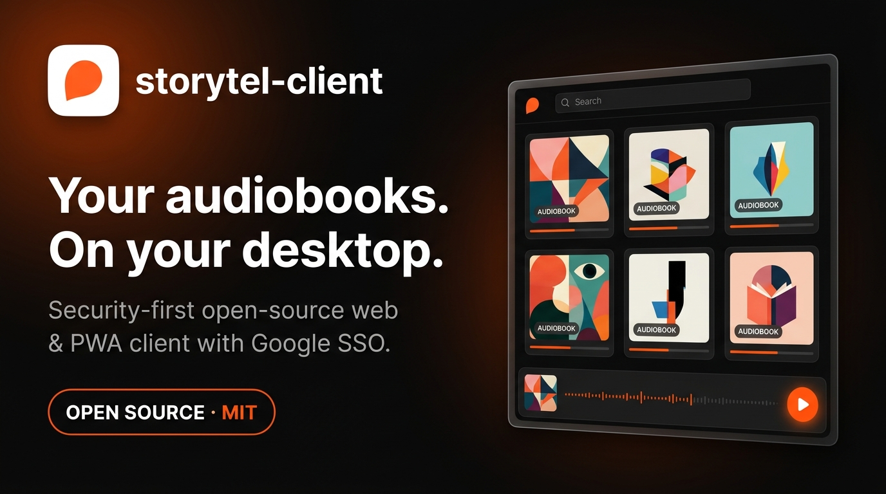

Windows
x64 / ARM64Windows 10 / 11 (64-bit)
Download for Windows
.exe
✓ Setup installer · Portable .exe
Official Storytel does not support reading or listening on desktop web. storytel-client bridges this gap: split-screen Read & Listen mode with Audio Sync, instant 100+ language word lookup, offline MP3/EPUB downloads, and Google SSO.

Choose your operating system below to download the latest desktop installer, portable package, or install as a PWA.
Windows 10 / 11 (64-bit)
macOS 12 Monterey or later
Ubuntu, Debian, Fedora, Arch
Designed with Storytel's clean aesthetic in both Dark and Warm Light themes, without Electron's 200 MB memory footprint.
Read e-books and listen to audiobooks side-by-side with automatic Audio Sync, Dark/Sepia/Light reader themes, and local EPUB/PDF import.
Double-click any word to see definitions, phonetics, and native speech pronunciation in 100+ languages. Save cards and export to Anki / CSV.
Download original EPUB e-books, save audiobooks as local offline MP3s, or export chapters as clean print-ready PDFs with one click.
Opens your real Chrome or Edge browser in an isolated profile with zero automation flags, so Google OAuth never blocks your sign-in.
HTTP Range streaming for instant seeking, 0.5x–3.0x speed, sleep timer (minutes or end of chapter), chapters, bookmarks, and hardware media keys.
Filter Storytel's catalog by language, duration, and category with a live preview pane and one-click Add to Library or Play.
Go beyond the default shelf: like audiobooks and organize them into color-coded custom collections like Sci-Fi, Bedtime, or Commute.
Track your 7-day listening activity, switch between Dark and Warm Light themes, toggle Turkish/English UI, and install as a native PWA.
Unlike legacy unofficial clients that store reversible passwords in plain JSON, every layer here is hardened by default.
Session tokens are encrypted at rest with a randomly generated 256-bit key on your machine. Tampered files are automatically rejected.
With Google SSO, no password is ever entered into the app. Even with email login, passwords are never saved to disk or cookies.
Strictly bound to 127.0.0.1 — never exposed on your LAN. Raw tokens never touch browser localStorage.
No analytics, no tracking, no third-party servers. Requests go directly from your machine to Storytel's official endpoints.
Requires Node.js 22+ and Chrome or Edge installed. Open http://127.0.0.1:3000 and optionally click "Install App" in the address bar for a standalone desktop window.
# Option 1: Instant launch via npm (Node.js 20+) npx storytel-client # Or install globally: npm i -g storytel-client && storytel-client # Option 2: Clone & build from source git clone https://github.com/onursercanyilmaz/storytel-client.git cd storytel-client npm install npm run build npm run start